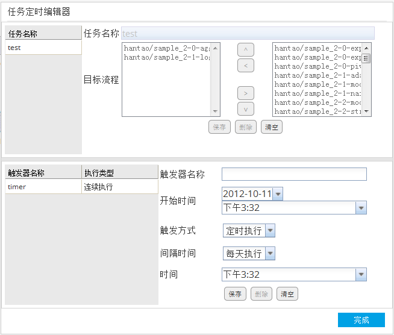

流程定时器可根据用户设定的时间运行流程，并将流程结果发送到用户的邮箱中。
定时方式分为连续执行和定时执行。
连续执行从开始时间开始，每隔设置的间隔时间触发一次任务。
其中如果执行次数设置为0，则这个触发器将永远执行。
如果指定了多个流程，则按选定的流程顺序依次执行。

定时执行分为每天执行，每周执行，每月执行以及每年执行。
每天执行表示每天的X时间触发任务。
每周执行表示每个星期X的Y时间触发任务。
每月执行表示每月的X日的Y时间触发任务。
每年执行表示每年的X日的Y时间触发任务。